| 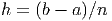 | 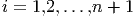 | 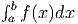 | ||
| 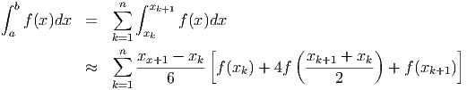 | 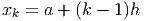 | 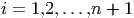 |  |
|
Considere o problema de calcular a área entre uma função positiva, o eixo 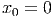 e as retas 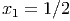 e 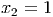. O valor exato dessa área é calculada fazendo uma aproximação por retângulos com bases iguais e depois tomando o limite quando o número de retângulos tende ao infinito:
 é o tamanho da base dos retângulo e , 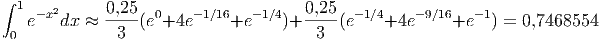,
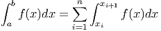, é a altura dos retângulos. Essa definição é
generalizada para cálculo de integrais num intervalo :
é o tamanho da base dos retângulo e , 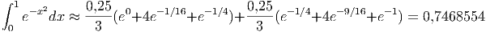,
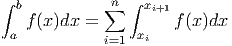, é a altura dos retângulos. Essa definição é
generalizada para cálculo de integrais num intervalo :
 , 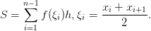. Temos a
aproximação por um retângulo com base 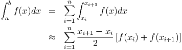, depois com dois retângulos de
base
, 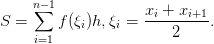. Temos a
aproximação por um retângulo com base 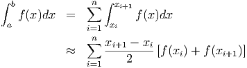, depois com dois retângulos de
base  e, finalmente com quatro retângulo de bases
e, finalmente com quatro retângulo de bases  .
.
Os valores aproximados para a integral são dados na seguinte tabela:
| 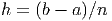 | 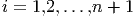 | 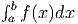 | ||
| 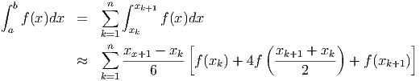 | 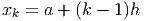 | 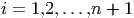 | |
|
|
|
A integral de uma função num intervalo 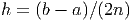, também chamada de quadratura numérica, é aproximada pela soma:
|
|
onde 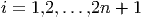, 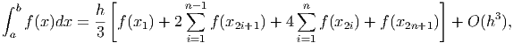, são pontos distintos do intervalo 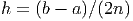. Nesta definição, a integral 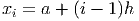 usando uma aproximação por retângulo usa apenas um ponto, o ponto médio do intervalo (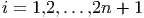), e a soma se reduz a uma parcela (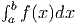). A fórmula geral para essa caso, chamado de regra do ponto médio é:
|
| (8.7) |
A regra do ponto médio (8.7) pode ser deduzida mais formalmente usando a expansão de Taylor
![∫ b ′ ∫ b ′′ ∫ b 1 2
f(x)dx = hf (x1) + f(x1) (x − x1 )dx + f (η) -(x − x1) dx
a [a ]b [a 2 ]
′ (x-−-x1)2 ′′ 1- 3 b
= hf (x1) + f(x1) 2 + f (η) 6(x − x1) a
[ 2 a 2]
= hf (x ) + f′(x ) (b −-x1)-− (a −-x1)-
1 1 2 2
[1 1 ]
+ f ′′(η ) -(b − x1)3 − -(a − x1)3
6 6
h3f′′(η)-
= hf (x1) + 3 .](main3725x.png)
Exemplo 8.3.1. Use a regra do ponto médio para aproximar a integral
Usando o intervalo 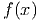, temos 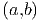 e 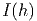. A regra do ponto médio resulta em
A forma natural de obter as regras de integração é usar o polinômio de Lagrange que passa pelo pontos 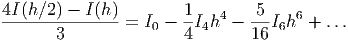
A regra do trapézio consiste em aproximar a integral por um trapézio em vez de um retângulo, como fizemos. Para isso, o polinômio de Lagrange deve ser uma reta, como mostra a figura.
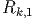
O polinômio de Lagrange de primeira ordem que passa por 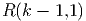 e 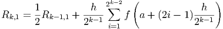 é dado por
|
|
Pelo teorema do valor médio, existe tal que e, portanto,
![[ ] [ ]
∫ b (x − x0)2 x1 (x − x1 )2 x1
f(x)dx = f(x0) --------- − f(x1) ---------
a [ 2h x0 2]h x0
f′′(η) x3 x2 x1
+ ------ ---− ---(x1 + x0) + x0x1x
2 3 2 x0
(x1 − x0)2 (x0 − x1 )2
= f(x0)---------- + f(x1) ----------
′′ ( 23h 2 2h 3 2 )
+ f-(η)- x-1− x1(x + x ) + x x x − x-0+ x0(x + x ) − x x x
2 3 2 1 0 0 1 1 3 2 1 0 0 1 0
2 2
= f(x0)h--+ f(x1)h--
2h 2h
f′′(η)2x31 −-3x21(x1 +-x0) +-6x21x0 −-2x30 +-3x20(x1-+-x0) −-6x1x20
+ 2 6
h f′′(η)( )
= -(f (x0) + f (x1)) +------ x30 − 3x20x1 + 3x21x0 − x31
2 12
h- h3f′′(η)-
= 2(f (x0) + f (x1)) − 12](main3752x.png) |
Exemplo 8.3.2. Use a regra do trapézio para aproximar a integral
Usando o intervalo , temos , e . A regra do trapézio resulta em
A regra de Simpson consiste em aproximar a integral usando três pontos do intervalo:
|
|
Se usarmos o mesma metodologia da regra dos trapézios, calcularemos
|
|
Pelo teorema do valor médio, existe  tal que
tal que
![[
∫ b ′ (x − x1)2 f ′′(x1 ) 3
f (x )dx = f(x1 )(x − x1 ) + f (x1)-------- + -------(x − x1)
a ] 2 6
f-′′′(x1) 4 x2
+ 24 (x − x1)
x0
f(4)(η )∫ x2 4
+ --24--- x (x − x1) dx
[ 0 2 ′′
= f(x )(x − x ) + f ′(x )(x-−-x1) + f--(x1-)(x − x )3
1 1 1 2 6 1
′′′ ]x2
+ f--(x1)(x − x1)4
24 x0
(4) [ ]
+ f---(η-) (x − x1)5 x2
120 x0](main3773x.png) |
Usando o fato que


Exemplo 8.3.3. Use a regra de Simpson para aproximar a integral
Usando o intervalo , temos  , , e . A
regra de Simpson resulta em
, , e . A
regra de Simpson resulta em

Vimos que em todas as estimativas de erro que derivamos, o erro depende do tamanho do intervalo de integração. Uma estratégia para reduzir o erro consiste em particionar o intervalo de integração em diversos subintervalos menores:
|
|
onde ,  e , sendo o número
de subintervalos da partição do intervalo de integração. Depois, aplica-se um
método simples de integração em cada subintervalo.
e , sendo o número
de subintervalos da partição do intervalo de integração. Depois, aplica-se um
método simples de integração em cada subintervalo.
A regra composta dos trapézios assume a seguinte forma:
O código Scilab abaixo é uma implementação do método do trapézio composto para calcular:
|
|
onde e , . Os parâmetros de entrada são: f o integrando definido como uma função no Scilab, a o limite inferior de integração, b o limite superior de integração, n o número de subintervalos desejado. A variável de saída é y e corresponde a aproximação calculada de .
Já a regra composta de Simpson assume a seguinte forma:
|
|
onde, agora, , , .
O código Scilab abaixo é uma implementação do método de Simpson composto para calcular:
|
|
onde e , . Os parâmetros de entrada são: f o integrando definido como uma função no Scilab, a o limite inferior de integração, b o limite superior de integração, n o número de subintervalos desejado. A variável de saída é y e corresponde a aproximação calculada de .
Exemplo 8.3.4. Calcule numericamente a integral
Solução.
| Ponto Médio | Trapézios | Simpson | |
| 1 | 5,4365637 | 218,3926 | 76,421909 |
| 2 | 21,668412 | 111,91458 | 51,750469 |
| 3 | 31,678746 | 80,272022 | 47,876505 |
| 6 | 41,755985 | 55,975384 | 46,495785 |
| 12 | 45,137529 | 48,865685 | 46,380248 |
| 24 | 46,057757 | 47,001607 | 46,372373 |
| 48 | 46,292964 | 46,529682 | 46,37187 |
| 96 | 46,352096 | 46,411323 | 46,371838 |
O método de Romberg é um método simplificado para construir quadraturas de alta ordem.
Considere o método de trapézios composto aplicado à integral
Teorema 8.3.1. Se é uma função analítica no intervalo , então a função admite uma representação na forma

Para um demonstração, veja [4]. Em especial observamos que
A ideia central do método de Romberg, agora, consiste em usar a extrapolação de Richardson para construir métodos de maior ordem a partir do métodos dos trapézios para o intervalo
Exemplo 8.3.5. Construção do método de quarta ordem.
A partir de agora, usaremos a seguinte notação
Observamos que os pontos envolvidos na quadratura são os mesmos pontos envolvidos na quadratura acrescidos dos pontos centrais, assim, temos a seguinte fórmula de recorrência:
Definimos para como o esquema de ordem quatro obtido da fórmula do exemplo 8.3.5:
Similarmente os valores de são os valores obtidos pela quadratura de ordem obtida via extrapolação de Richardson. Pode-se mostrar que
Exemplo 8.3.6. Construa o esquema de Romberg para aproximar o valor de com erro de ordem 8.
O que nos fornece os seguintes resultados:
| 55,59815 | 0,000000 | 0,000000 | 0,000000 |
| 30,517357 | 22,157092 | 0,000000 | 0,000000 |
| 20,644559 | 17,353626 | 17,033395 | 0,000000 |
| 17,565086 | 16,538595 | 16,484259 | 16,475543 |
Ou seja, temos:
|
|
usando uma aproximação de ordem 8.
Exemplo 8.3.7. Construa o esquema de Romberg para aproximar o valor de com erro de ordem 12.
O que nos fornece:
| 218,3926 | |||||
| 111,91458 | 76,421909 | ||||
| 66,791497 | 51,750469 | 50,105706 | |||
| 51,892538 | 46,926218 | 46,604601 | 46,549028 | ||
| 47,782846 | 46,412949 | 46,378731 | 46,375146 | 46,374464 | |
| 46,72661 | 46,374531 | 46,37197 | 46,371863 | 46,37185 | 46,371847 |
Ou seja, temos:
|
|
com uma aproximação de ordem 12.
Todos os métodos de quadratura que vimos até o momento são da forma
![[ ( ) ]
∫ b a + b b − a
f (x)dx ≈ f (a) + 2f ----- + f (b) -----
a 2 ( ) 4
b −-a b −-a a +-b b-−-a
= 4 f(a) + 2 f 2 + 4 f (b)
∑3
:= w1f (x1) + w2f (x2) + w3f (x3) = wjf (xj)
j=1](main3863x.png)
![∫ [ ( ) ( )
b 3a +-b- a +-b
a f(x)dx ≈ f(a) + 4f 4 + 2f 2
( ) ]
+ 4f a +-3b- + f(b) b −-a
4 12
( ) ( )
= b-−-af (a ) + b-−-a f 3a-+-b- + b −-af a-+-b
12 3 4 6 2
b − a ( a + 3b) b − a
+ -----f ------- + ----- f(b)
3 4 12
∑5
:= wjf (xj)
j=1](main3865x.png)
A principal técnica que temos usado para desenvolver os métodos numéricos é o polinômio de Taylor:
Integrando termo a termo, temos:

Neste momento, é natural investigar o desempenho de um esquema numérico aplicado a funções do tipo .
Definição 8.3.1. A ordem de precisão ou ordem de exatidão de um esquema de quadratura numérica como o maior inteiro positivo n para o qual o esquema é exato para todas as funções do tipo com , ou seja, Um esquema é dito de ordem se
Solução. Temos um sistema de quatro equações e quatro incógnitas dado por:
Da segunda e quarta equação, temos:
Esse esquema de ordem de precisão três e dois pontos chama-se quadratura de Gauss-Legendre com dois pontos:

A quadratura de Gauss-Legendre de pontos é o esquema numérico
![wj = (-------2)---------.
1 − x2j [Pn′(xj)]2](main3910x.png)
| n | ||
| 1 | 0 | 2 |
| 2 | 1 | |
3 | 0 | |
4 | ||
 |
||
Solução.
 |
No Scilab:
Solução.
Solução. Para tanto, fazemos a mudança de variáveis :
|
|
E, então aplicamos a quadratura gaussiana nesta última integral.
 ,, , e
,, , e 
![|----------|----------------|-------------|----------------|-------------------|
| | | | | |
|---f(x)---|-----Exato------|--Trapézio---|---Simpson------|Gauss-Legendre-(2)-|
| | | | | |
| | | | −1 0 1 | √ - √ - |
| | e− e− 1 | e−1 + e | e--+-4e--+-e-- | e− −-33+ e-33 |
| ex | | | 3 | |
| | ≈ 2,35040 | ≈ 3,08616 | ≈ 2,36205 | ≈ 2,34270 |
| | | | | |
|----------|----------------|-------------|----------------|-------------------|
| | | | | |
| | √ -- | | | |
| ∘ ------| 16− 4 2 | | | |
|x2 3+ x3 | 9 9 | 3,41421 | 1,13807 | 1,15411 |
| | ≈ 1,14924 | | | |
| | | | | |
|----------|----------------|-------------|----------------|-------------------|
| | | | | |
| 3 | −1 | | | |
| x2ex | e−-e3--≈ 0,78347 | 3,08616 | 1,02872 | 0,67905 |
| | | | | |
|----------|-------------------------------------------------------------------|
| |](main3900x.png)